Procedure Text - Batik Ribbon
Batik ribbon is a ribbon made from batik, a type of cloth with a patterned design.
It is made by applying wax to cloth to prevent dye absorption, then the wax is removed
to create a patterned negative. Moreover, batik cloth provides education about the richness
of the archipelago's batik motifs. This product was chosen because batik ribbons are elegant
and culturally the combination between traditional in style and modern in function which is
now favored by all women in all professions.
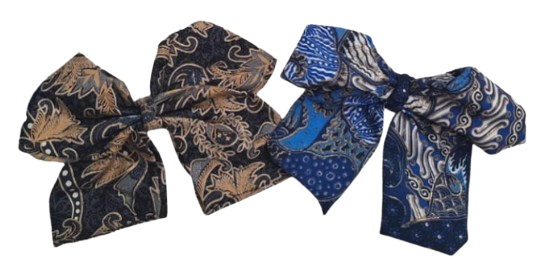
Tools and Materials:
- Fabric scissors
- Sewing thread
- Dress meter
- Glue gun
- Sewing machine
- Batik fabric
- Sewing needles
- Iron
- Ruler
- Pencil
- Bread paper
- Straight pins
- Plain hair clip
Process:
- The necessary tools and materials are prepared.
- Two hairband fabric patterns are drawn on baking paper with sizes (68x18 cm) and (12x8 cm).
- The pattern is cut according to the measurements.
- The pattern is traced onto the fabric and is pinned with needles.
- The fabric is cut into two pieces following the traced pattern.
- The needles and baking paper are removed from the cut fabric.
- The batik fabric is folded vertically with the motif facing outward.
- A 3 cm diagonal cut is made on both the right and left sides of the larger fabric piece.
- The fabric is sewn from the 3 cm cut on the left towards the center, and then the stitching
is continued to the end.
- The fabric is folded into a shape resembling a scarf.
- A long thread is cut and is sewn upwards from the bottom of the fold through the ruffles, shaping
the ribbon.
- The remaining thread is wound around the center of the ribbon shape.
- The second piece of fabric is bound together.
- The tied fabric is attached to the front center of the ribbon using a hot glue gun.
- The top and bottom of the glued fabric are secured to the back of the ribbon.
- A clasp is attached to the center of the back of the ribbon with hot glue.
- The bottom of the ribbon is sewn using a trail stitch or a sewing machine.
Procedure Text - Ecolush Balm
This product was chosen because lip balm is a widely used cosmetic product that can be made using
eco-friendly and biodegradable ingredients. By utilizing natural oils and beeswax, this lip balm
minimizes synthetic chemicals, making it safer for both users and the environment.
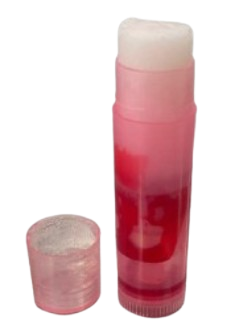
Tools and Materials:
- Coconut oil (1 tbsp)
- Shea butter (1 ½ tsp)
- Olive oil (1 tbsp)
- 1 tsp cosmetic-grade dye
- Beeswax (5-8 gr/ 2 tbsp)
- Chopstick
- Wooden spoon
- Aluminum bowl
- Pan
- Scales
- Spoon
- Lip balm tube
Process:
- In a shallow bowl, water is added up to 2-3 inches.
- The beeswax is melted by simmering it in water in a measuring cup or any glass jar. Stir with
a wooden stick until it is completely melted.
- Shea butter and coconut oil are added to the mixture, and everything is melted together. Once
fully melted, the mixture is removed from the heat.
- Essential oils and cosmetic dye are mixed into the blend.
- The liquid mixture is poured into lip balm tubes and left to cool at room temperature until it hardens.


 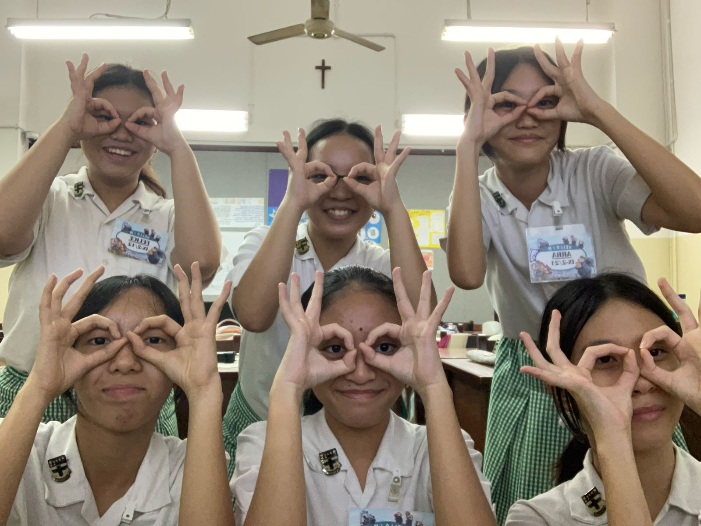
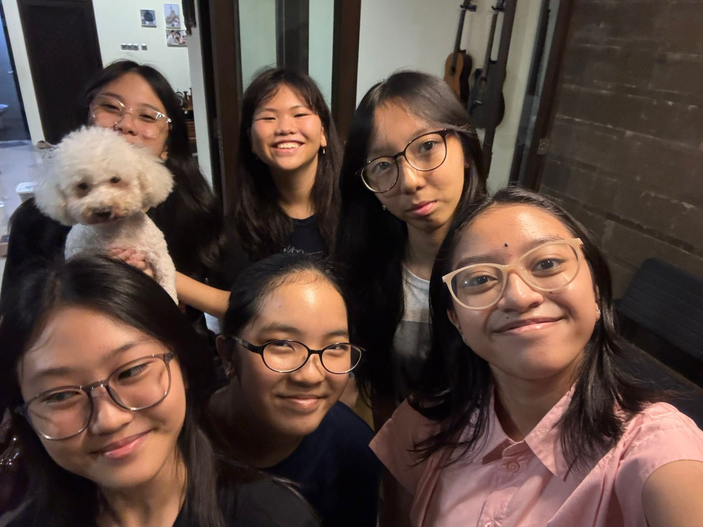
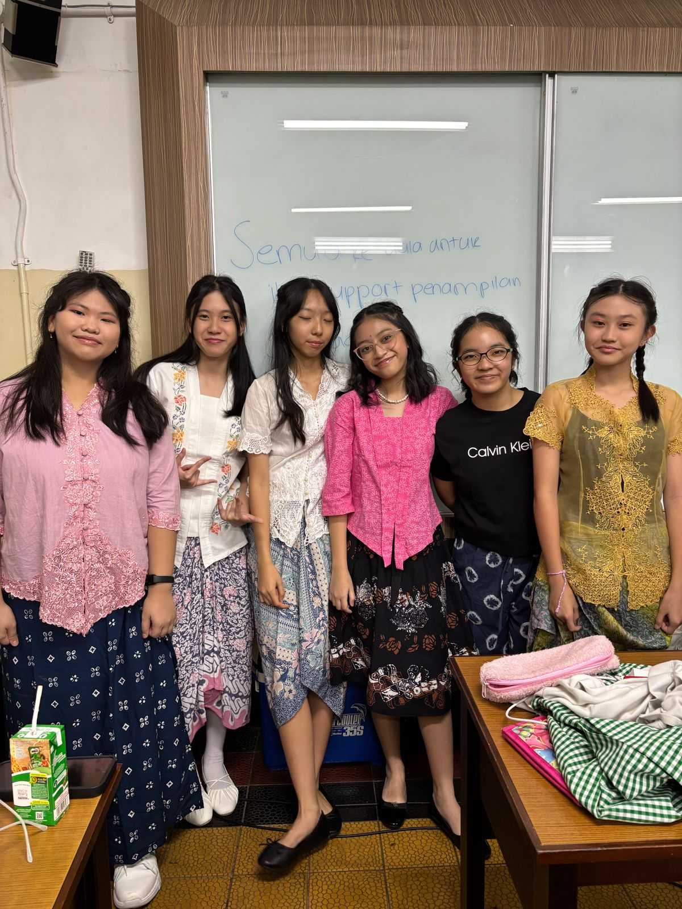
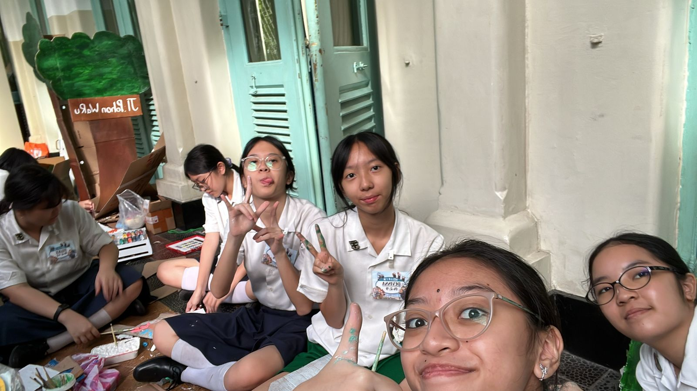
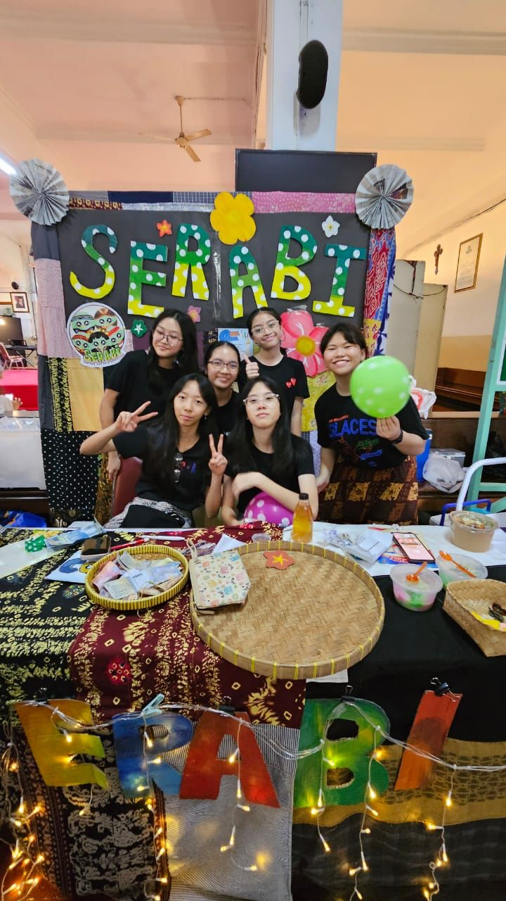
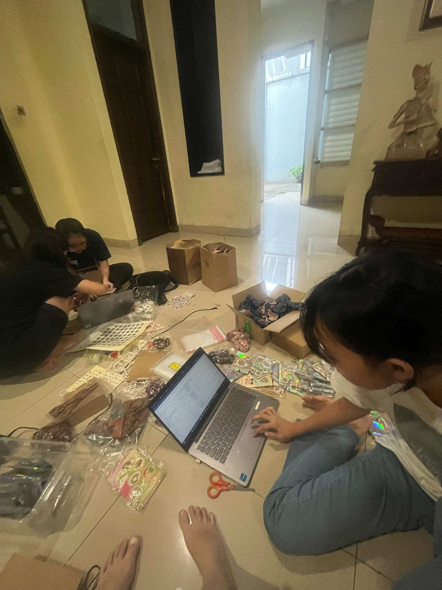
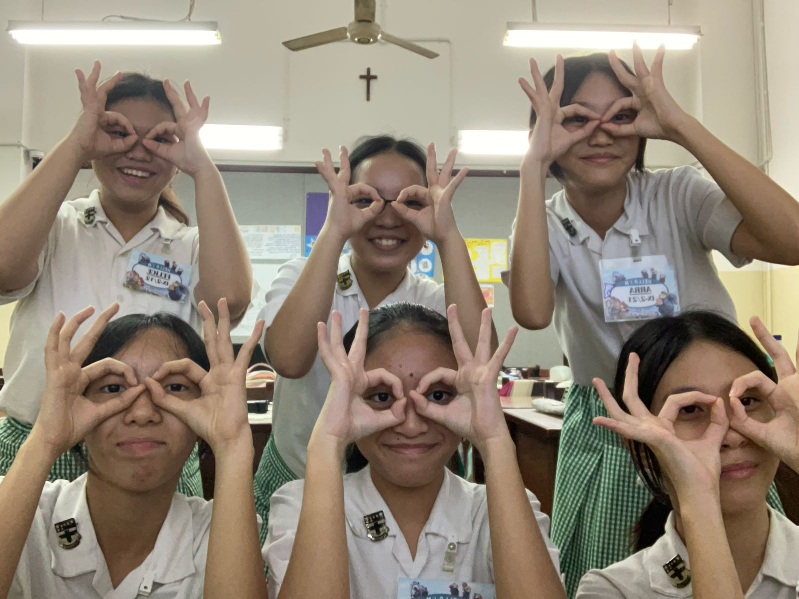
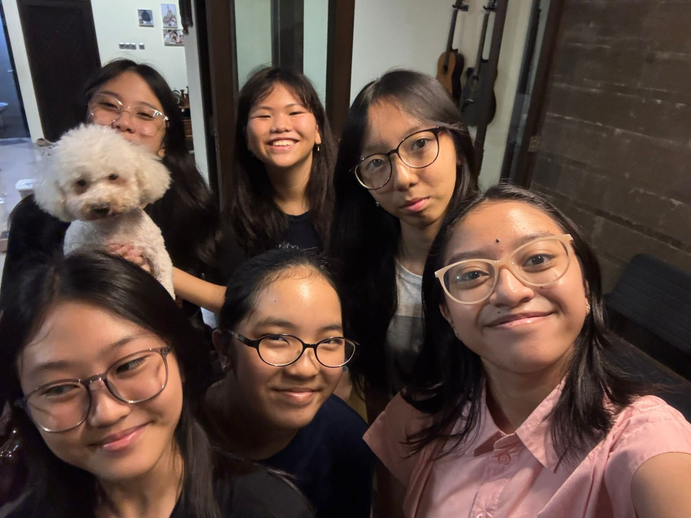
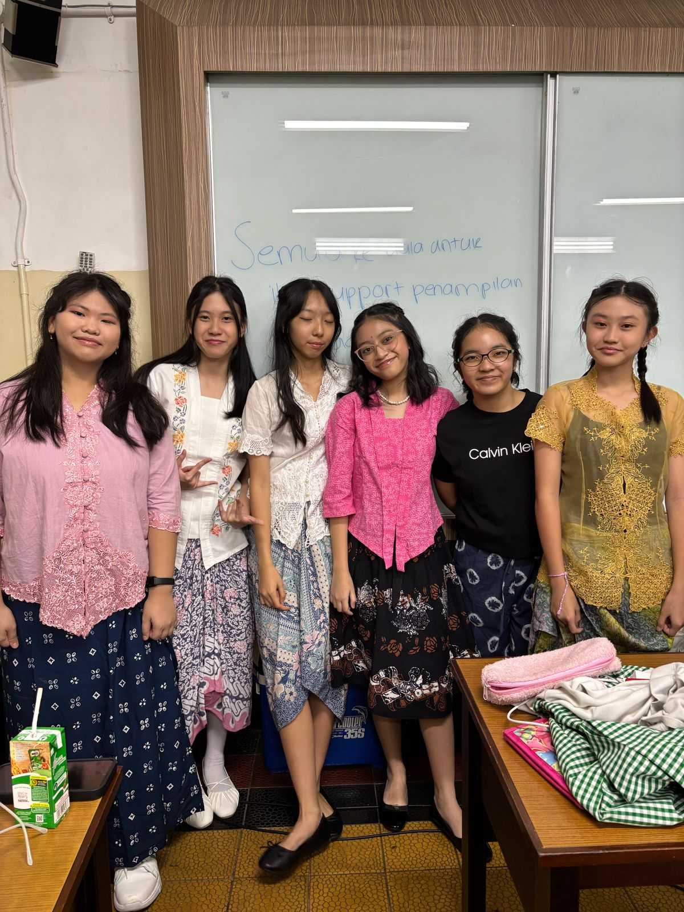
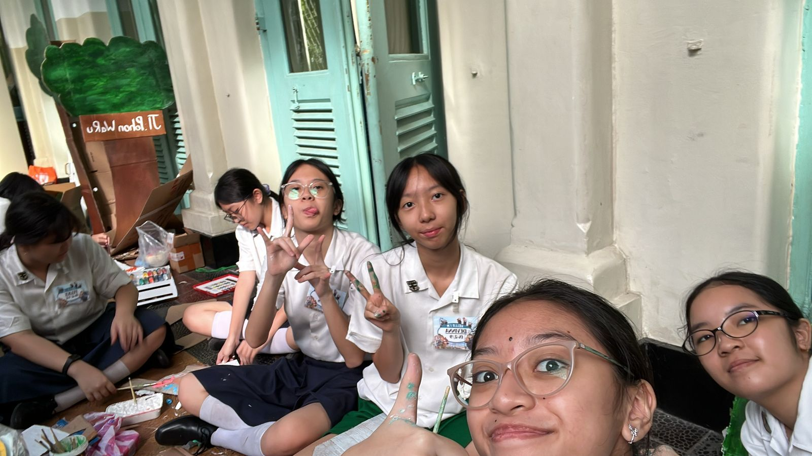
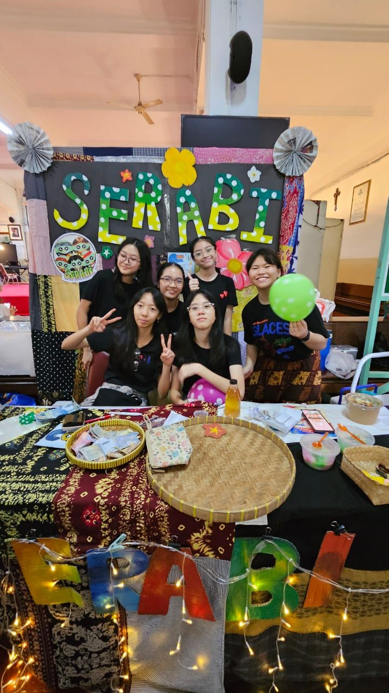
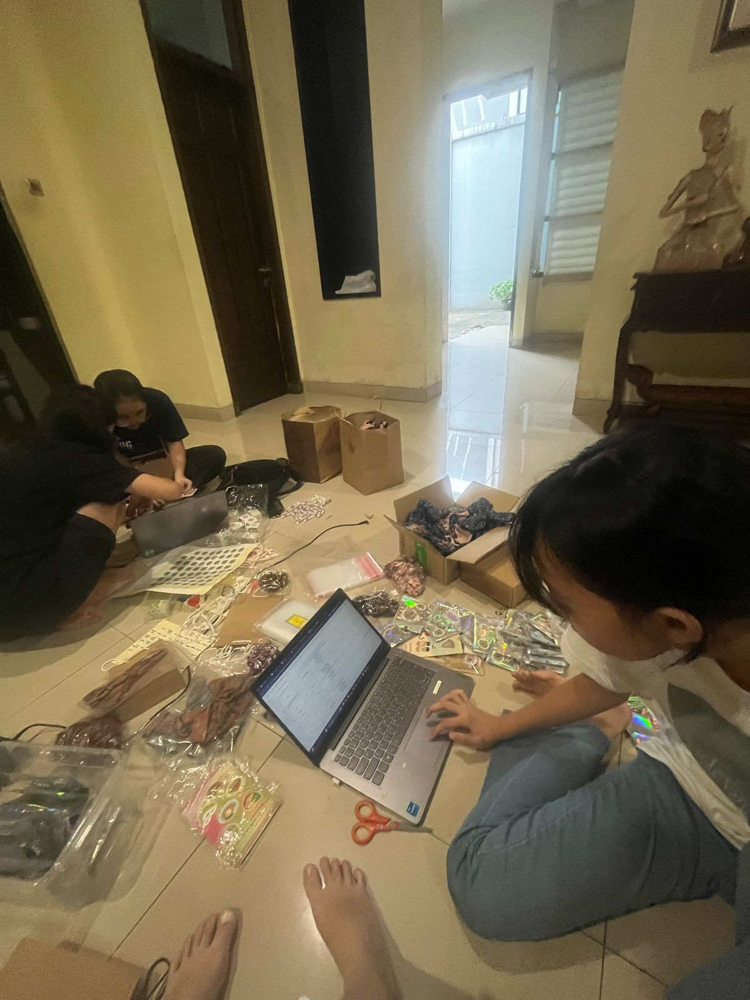